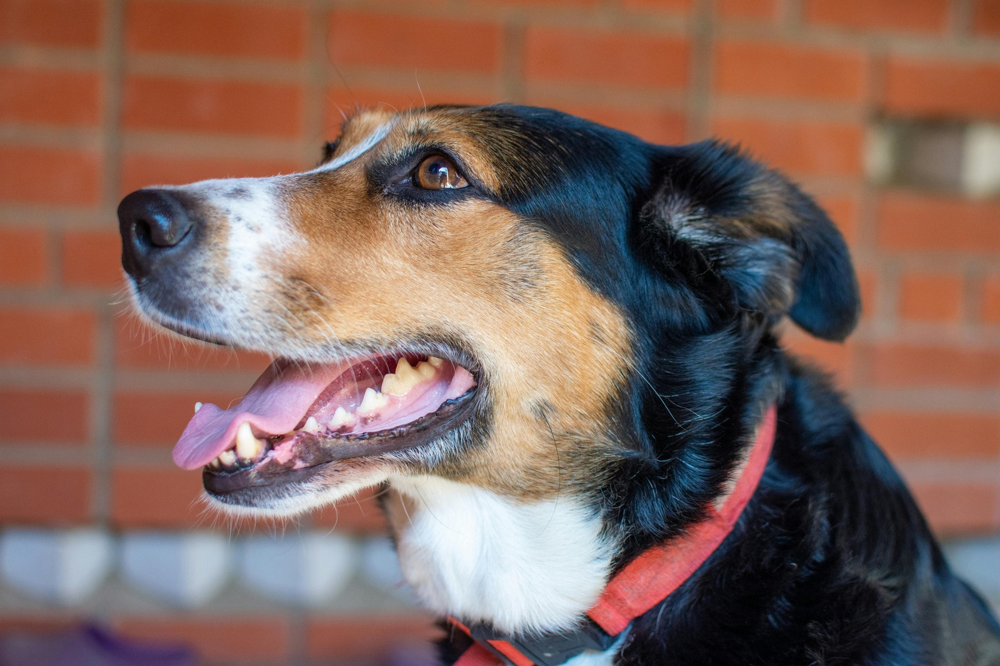
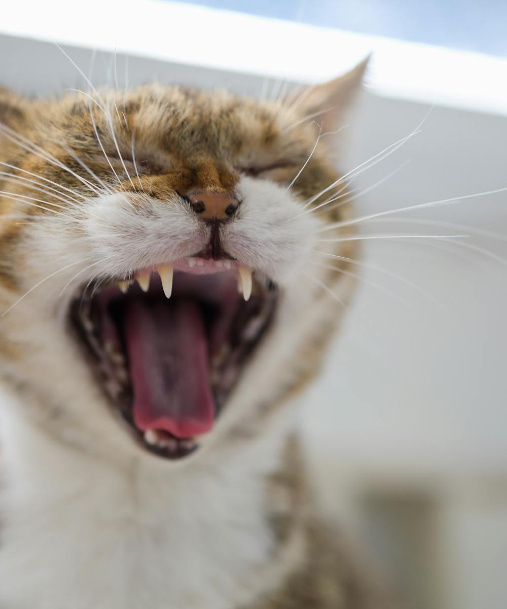

Dental disease is one of the most common — and most overlooked — health problems in dogs and cats. We take your pet's oral health seriously.
Request an AppointmentAt Jackson Veterinary Clinic, we take your pet's oral health seriously. We provide dental scaling, which is a process that removes tartar buildup, preventing further complications of the mouth. The bacteria in the mouth not only cause tooth loss, but more importantly, they can enter into the bloodstream and infect the heart, liver and kidneys (and other organs as well).
Occasionally, removal of teeth is required, either in the case of an infection or compaction of adult and baby teeth. After the dental cleaning is done we help to prevent future problems by sending your pet home with his or her very own dental kit that contains samples to help keep your pet's teeth healthier longer!

The sooner you take care of the teeth the easier the procedure will be for the pet.(at the first sign of tartar or gum redness)
Postponing a recommended dental cleaning only allows more bacteria to be released into the blood stream and tartar builds up on tartar, forming a hard to remove coating to the teeth.
From routine cleanings to extractions, every step happens right here in Jackson.
Removes tartar buildup before it can cause tooth loss or threaten the organs.
Your pet's teeth are examined by the Doctor at every annual visit.
Careful removal of infected or compacted adult and baby teeth when needed.
Every patient goes home with samples to keep their teeth healthier, longer.

Your pet's teeth will be examined by the Doctor when you come in for their annual exam. At that time, he will advise you as he sees fit. If you have any questions, at this time or any other, please feel free to ask the Doctor or one of the technicians. Taking care of your pet's teeth now will save the both of you trouble in the long run.
If you would like a printable copy of our anesthesia permission form to fill out and bring in at the time of your appointment, you can request one here. If you do not bring one in then you will be asked to fill one out at our office.
Anesthesia Consent FormWe don't do anonymous online booking — just send a request and a real person from our team will reach out.
Request an Appointment